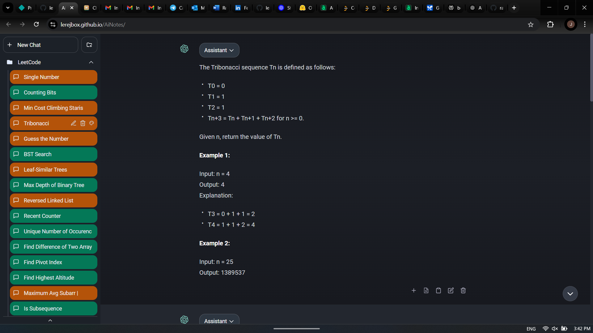
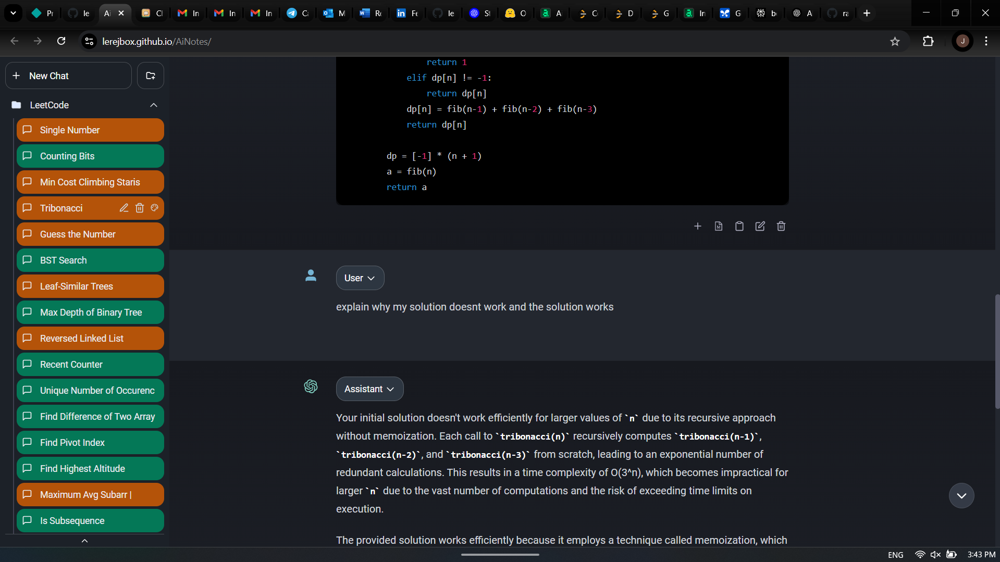

Project Overview
A custom-built AI chatbot interface designed to enhance the documentation and learning experience.
This project integrates features such as folder management, search, colored-tag filtering, and a prompt library system to streamline user workflows.
NOTE: This project is no longer maintained. Some planned features were not implemented.

Filtering with colored tags to categorize based on difficulty and topic. Example: easy = green, medium = yellow, hard = red.

Ask follow up questions at any point in time, be it during learning or reviewing.
Key Contributions
- Designed a clean and user-friendly UI to improve usability and navigation.
- Implemented folder management to organize conversations and notes efficiently.
- Added colored-tag filtering for quick content categorization and difficulty level identification.
- Built a prompt library feature to store and reuse effective LLM prompts, streamlining repetitive tasks.
Previously planned features
- Flashcard-inspired review system, enabling users to revisit key insights and concepts discussed during AI interactions or stored in notes based on the difficulty level of the content from the tags.
- Advanced search feature incorporating retrieval-augmented generation (RAG) for semantic search capabilities.
- Add other LLM providers such as Claude and Gemini to allow users to choose their preferred AI model.
Skills and Tools Used
GIT
React
TypeScript
JavaScript
CSS
HTML
Vite